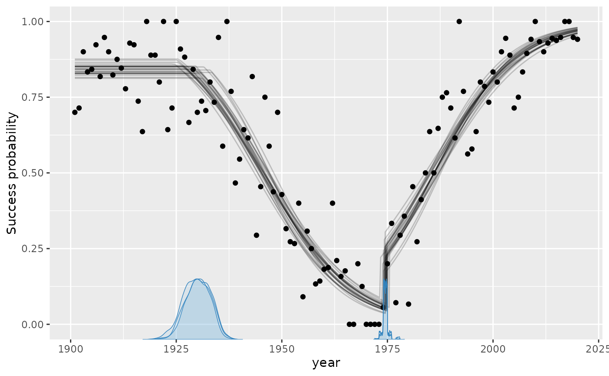
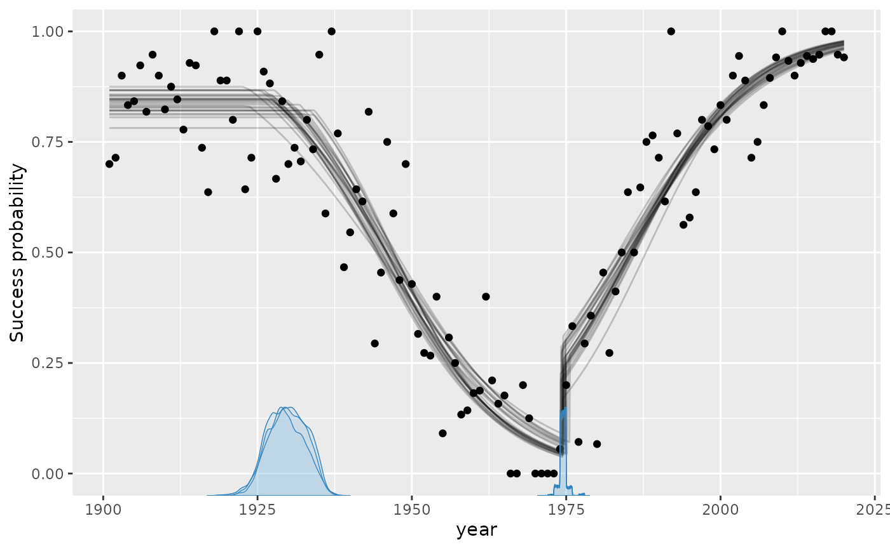
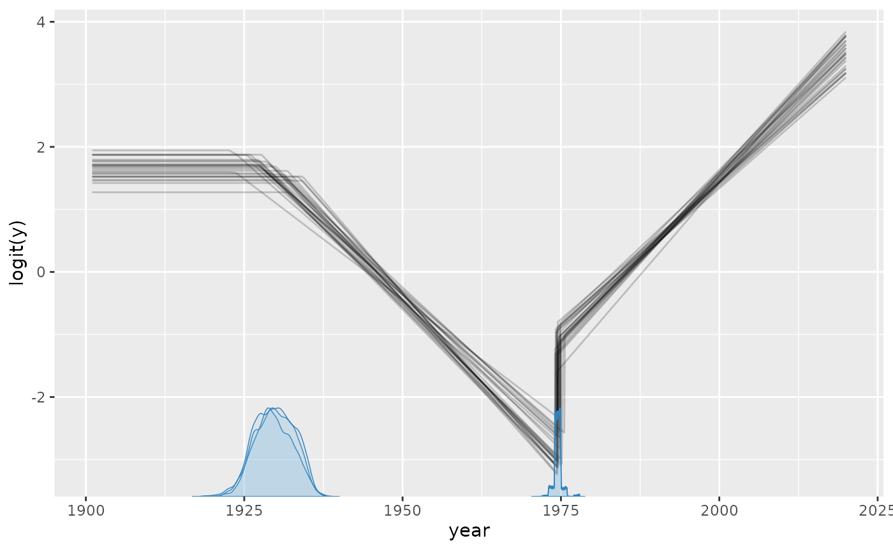
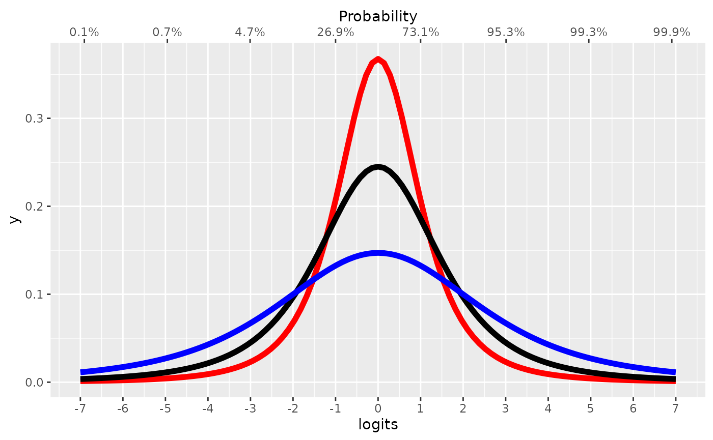

mcp aims to implement Generalized Linear Models in a way
that closely mimics that of brms::brm. You can set
the family and link functions using the family
argument.
First, let us specify a toy model with three segments:
model = list(
y | trials(N) ~ 1, # constant success probability
~ 0 + year, # joined changing success probability
~ 1 + year # disjoined changing success probability
)Simulate data
If you already have data, you can safely skip this section.
We run mcp with sample = FALSE to get what
we need to simulate data.
library(mcp)
future::plan(future::multisession, workers = 3)
set.seed(42) # Make the script deterministic
df = data.frame(
year = 1901:2020, # evaluate for each of these
N = sample(10:20, size = 120, replace = TRUE), # number of trials
y = 1
)
empty = mcp(model, data = df, family = binomial(), sample = FALSE)Now we can simulate. First, let us see the model parameters.
mcp_pars(empty)## # A tibble: 6 × 9
## name part scope role segment dpar order group_col population_name
## <chr> <chr> <chr> <chr> <int> <chr> <int> <chr> <chr>
## 1 cp_1 cp popu… chan… 2 cp NA NA NA
## 2 cp_2 cp popu… chan… 3 cp NA NA NA
## 3 Intercept_1 predict… popu… fixe… 1 mu NA NA NA
## 4 year_2 predict… popu… fixe… 2 mu NA NA NA
## 5 Intercept_3 predict… popu… fixe… 3 mu NA NA NA
## 6 year_3 predict… popu… fixe… 3 mu NA NA NA- It takes two intercepts (
Intercept_*), for segments 1 and 3. - It takes two slopes (
year_*), for segment 2 and 3. - It takes two change points (
cp_*) - one between each segment.
empty$simulate is now a function that can predict data
given these parameters (signature:
empty$simulate(fit, newdata, ...)). If you are in a
reasonable R editor, type empty$simulate( and press TAB to
see the required arguments. I came up with some values below, including
change points at year = 25 and year = 65. Because binomial()
defaults to link = "logit", the intercept and slopes are on
the logit scale, which
maps success probabilities between 0 and 1 to the real line. This will
be important later when we set priors.
set.seed(42)
df$y = empty$simulate(
empty, df,
cp_1 = 1925, cp_2 = 1975,
Intercept_1 = 2, Intercept_3 = -1,
year_2 = -0.1, year_3 = 0.1)
head(df)## year N y
## 1 1901 10 7
## 2 1902 14 10
## 3 1903 10 9
## 4 1904 18 15
## 5 1905 19 16
## 6 1906 13 12Visually:
plot(df$year, df$y)Check parameter recovery
The next sections go into more detail, but let us quickly see if we can recover the parameters used to simulate the data.
We can use summary to see that it recovered the
parameters to a pretty good precision. Again, recall that intercepts and
slopes are on a logit scale.
summary(fit)## Family: binomial
## Links: mu = logit
## Iterations: 3000 from 3 chains.
## Segments:
## 1: y | trials(N) ~ 1
## 2: y | trials(N) ~ 1 ~ 0 + year
## 3: y | trials(N) ~ 1 ~ 1 + year
##
## Change point parameters:
## name mean sd lower upper rhat ess_bulk ess_tail sim
## cp_1 1930.084 3.0280 1924.086 1935.437 1.00 440 987 1925.0
## cp_2 1974.516 0.6268 1973.232 1975.856 1.00 1120 476 1975.0
## match
## OK
## OK
##
## Population-level parameters:
## name mean sd lower upper rhat ess_bulk ess_tail sim
## Intercept_1 1.624 0.1445 1.360 1.921 1.00 805 1736 2.0
## year_2 -0.103 0.0108 -0.126 -0.083 1.01 486 1002 -0.1
## Intercept_3 -1.078 0.2033 -1.468 -0.678 1.01 630 1008 -1.0
## year_3 0.099 0.0088 0.082 0.116 1.00 810 1856 0.1
## match
##
## OK
## OK
## OKsummary uses 95% central posterior intervals by default,
but you can change it using summary(fit, width = 0.80). If
you have group-level
effects, use ranef(fit) to see their deviations.
Plotting the fit confirms good fit to the data, and we see the discontinuities at the two change points:

These lines are just fit$simulate applied to a random
draw of the posterior samples. In other words, they represent the joint
distribution of the parameters. You can change the number of draws
(lines) using plot(fit, lines = 50).
Speaking of alternative visualizations, you can also plot this on the logit scale, where the linear trends are modeled:

These plots work with group-level effects as well.
Model diagnostics and sampling options
Already in the default plot as used above, it will be
obvious if there was poor convergence. A more direct assessment is to
look at the posterior distributions and trace plots:

Convergence is perfect here as evidenced by the overlapping trace plots that look like fat caterpillars (Bayesians love fat caterpillars). Notice that the posterior distribution of change points can be quite non-normal and sometimes even bimodal. Therefore, one should be careful not to interpret the interval as if it was normal.
plot() and plot_pars() can do a lot more
than this, so check out their documentation.
Priors for binomial models
mcp uses priors to achieve a lot of it’s functionality.
See how to set priors, including
how to share parameters between segments and how to fix values. Here, I
post a few notes about the binomial-specific default priors.
The default priors in mcp are set so that they are
reasonably broad to cover most scenarios, though also specific enough to
sample effectively. They are not “default” as in “canonical”. Rather,
they are “default” as in “what happens if you do nothing else”. All
priors are stored in fit$prior (also
empty$prior). We did not specify prior above,
so it ran with default priors:
cbind(fit$prior) # Raw view
prior_summary(fit) # Richer view. Try adding verbose = TRUE## [,1]
## cp_1 "dt(1901, 59.5, 1) T(1901, 2020)"
## cp_2 "dt(1901, 59.5, 1) T(cp_1, 2020)"
## Intercept_1 "dt(0, 1.5, 3)"
## year_2 "dt(0, 0.01260504, 3)"
## Intercept_3 "dt(0, 1.5, 3)"
## year_3 "dt(0, 0.01260504, 3)"
## # A tibble: 6 × 5
## parameter segment dpar prior bounds
## <chr> <int> <chr> <chr> <chr>
## 1 cp_1 2 cp student_t(df = 1, location = 1901, scale = 5… [min(…
## 2 cp_2 3 cp student_t(df = 1, location = 1901, scale = 5… [cp_1…
## 3 Intercept_1 1 mu student_t(df = 3, location = 0, scale = 1.5) none
## 4 year_2 2 mu student_t(df = 3, location = 0, scale = 0.01… none
## 5 Intercept_3 3 mu student_t(df = 3, location = 0, scale = 1.5) none
## 6 year_3 3 mu student_t(df = 3, location = 0, scale = 0.01… noneThe priors on change points are discussed extensively in the prior
vignette. With the default logit link, intercepts and categorical
contrasts use dt(0, 1.5, 3). Its central 95% interval is
approximately -4.8 to 4.8 logits, corresponding to probabilities from
0.008 to 0.992, while its heavy tails retain support for more extreme
values. The figure compares Student-t priors with scales 1 (red), 1.5
(black, the mcp default), and 2.5 (blue), together with
their correspondence to probabilities. The probit link currently uses
the same numerical default for simplicity.
Compared with the dt(0, 2.5, 3) intercept and flat
coefficient defaults in brms, these proper priors mildly
reduce extreme predictions in short segments while remaining broad and
heavy-tailed.
inverse_logit = function(x) exp(x) / (1 + exp(x))
scaled_t = function(x, scale) dt(x / scale, df = 3) / scale
# Start the plot
library(ggplot2)
ggplot(data.frame(logits = 0), aes(x = logits)) +
# Plot Student-t priors. Set scale in "args"
stat_function(fun=scaled_t, args = list(scale = 1), lwd=2, col="red") +
stat_function(fun=scaled_t, args = list(scale = 1.5), lwd=2, col="black") +
stat_function(fun=scaled_t, args = list(scale = 2.5), lwd=2, col="blue") +
# Set the secondary axis
scale_x_continuous(
breaks = -7:7, limits = c(-7, 7),
sec.axis = sec_axis(
~ inverse_logit(.),
name = "Probability",
labels = scales::percent_format(),
breaks = round(inverse_logit(seq(-7, 7, by = 2)), 3)
)
)
Please keep in mind that when these priors combine through the model, the joint probability may be quite different.
Numeric coefficient scales are divided by a representative change in
their model-matrix column: its range when it has two values, and two
standard deviations otherwise. Terms involving local par_x
additionally use the expected segment width,
(max(x) - min(x)) / n_segments(). The implied change across
a typical segment therefore has the same 1.5-logit scale, even when the
model contains several change points.
JAGS code
Here is the JAGS code for the model used in this article.
fit$jags_code## model {
## # mcp helper values
## cp_0 = CONST1_
## cp_3 = CONST2_
##
## # Priors for population-level effects
## cp_1 ~ dt(CONST1_, 1/(CONST3_)^2, CONST4_) T(CONST1_,CONST2_) # Regularizing t-tail within the observed change-point span
## cp_2 ~ dt(CONST1_, 1/(CONST3_)^2, CONST4_) T(cp_1,CONST2_) # Regularizing t-tail ordered after cp_1 within the observed change-point span
## Intercept_1 ~ dt(0, 1/(1.5)^2, 3) # Weakly regularizing link-scale intercept
## year_2 ~ dt(0, 1/(0.01260504)^2, 3) # Weakly regularizing link-scale coefficient scaled to a reference predictor change
## Intercept_3 ~ dt(0, 1/(1.5)^2, 3) # Weakly regularizing link-scale intercept
## year_3 ~ dt(0, 1/(0.01260504)^2, 3) # Weakly regularizing link-scale coefficient scaled to a reference predictor change
##
## # Model and likelihood
## for (i_ in 1:length(year)) {
## # par_x local to each segment
## x_local_1_[i_] = min(year[i_], cp_1)
## x_local_2_[i_] = min(year[i_], cp_2) - cp_1
## x_local_3_[i_] = min(year[i_], cp_3) - cp_2
##
## # Formula for mu
## link_mu_[i_] =
## (year[i_] >= cp_0) * (year[i_] < cp_2) * inprod(rhs_matrix_[i_, c(1)], c(Intercept_1)) * 1 +
## (year[i_] >= cp_1) * (year[i_] < cp_2) * inprod(rhs_matrix_[i_, c(2)], c(year_2)) * x_local_2_[i_] +
## (year[i_] >= cp_2) * inprod(rhs_matrix_[i_, c(3)], c(Intercept_3)) * 1 +
## (year[i_] >= cp_2) * inprod(rhs_matrix_[i_, c(4)], c(year_3)) * x_local_3_[i_]
##
## # Likelihood and log-density for family = binomial()
## mu_[i_] = ilogit(link_mu_[i_])
## y[i_] ~ dbin(mu_[i_], N[i_])
## }
## }